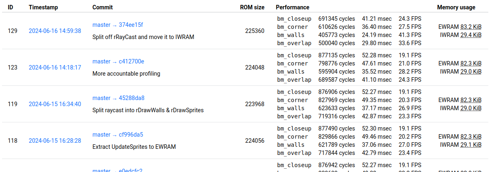

How I failed to make a game
Today I am releasing my raycasting tech demo for the GameBoy Advance. Although it falls short of the goals I set out in the beginning – which included releasing a playable game –, I think there are some lessons worth sharing with the world.
This project started essentially as a challenge: inspired by the impressive work of 3DSage, I wanted to see if I could build a raycasting “2.5D” engine that ran well enough to play a game.
I explained in a previous post why I find the GBA a really nice platform to develop for. I have always enjoyed game programming, but pretty much from the beginning of my C++ journey I have been stuck in the Game Engine Trap. Due to that realization, and based on experience from my other gamedev projects, it was really important to avoid getting carried away by tasks that are fun, but ultimately non-important. To that end I established some firm rules:
- Build a game, not a game engine
- Don’t get stuck on assets. Make a quick placeholder when necessary
- Don’t get distracted by languages. Use straightforward C++ and, if necessary, Python to generate code. Want fancy LISP-compiled-to-bytecode AI scripting? Put it in another project.
- Stick to one design direction. Don’t start branching out in the middle of development.
And it worked – until I realized that tech development is the really interesting part for me, and while it is fun to think about the final result, with all the captivating environments and assets and mechanics, actually getting there eventually turns into a chore. Therefore, after not touching the project in several months, I declare time for a post-mortem!
What worked out well
My tech stack was fixed more-or-less from the start. The main language for run-time code was C++, technically C++20, but I use barely any new language features. I was determined to use CMake, partly because it is the native project format of my favorite C++ IDE (CLion), partly because I just like it. As toolchain, I used devkitARM at first, but moved to the official ARM GNU Toolchain with Tonclib to access the GBA hardware. Tonclib is really great. I don’t think it gets enough praise, and I think that more libraries should follow the same kind of spartan philosophy.
For really hot code paths, namely sprite scaling code, I also generate what are basically unrolled loops. They’re still compiled as C++, GCC does a good job of optimizing it. I didn’t want to write any assembly code except as a last resort at the end of the project, since it would be time-consuming to maintain.
Most games cannot exist without a considerable amount of assets. Having previously built somewhat sophisticated asset pipelines, this time I wanted something dead simple, knowing my game would be very small. I had recently finally grasped how input/output dependencies work for custom steps in CMake projects, so it seemed kind of obvious to use these for asset compilation, including the management of any dependencies between assets (such as between sprites and palettes). On GBA, the entirety of the cartridge ROM shows up as addressable memory, so instead of embedding custom binary formats and filesystem images, I just decided to generate a C++ header with the compiled data for each asset. Here’s an example snippet from the animation data for a spider enemy:
...
// col 30
{25, 7, ani_spider_dead_1_data_30},
// col 31
{25, 6, ani_spider_dead_1_data_31},
};
static const AnimFrame ani_spider_dead_frames[] = {
{ .spans = ani_spider_dead_0_spans },
{ .spans = ani_spider_dead_1_spans },
};
static const AnimImage ani_spider_anims[] = {
{ .frames = ani_spider_idle_frames, .num_frames = 2 },
{ .frames = ani_spider_walk_frames, .num_frames = 2 },
{ .frames = ani_spider_attk_frames, .num_frames = 2 },
{ .frames = ani_spider_dead_frames, .num_frames = 2 },
};
static const SpriteImage ani_spider = { .anims = ani_spider_anims, };
I cannot overstate how satisfied I am with this solution. Again, this might only work for games up to a certain size. Rumor has it, though, that there is leaked Pokémon R/S/E code out there which does the exact same thing.
The custom asset compilers are all written in Python with only the most essential external dependencies (Numpy and Pillow). Python dependency management in this context is still an unsolved problem for me; in principle, the CMake script could set up a venv and install arbitrary dependencies at configuration time, but such a setup sounds rather fragile. So I just require those two packages to be already installed in whatever interpreter is used to configure the project.
To create and edit maps I opted for the venerable Tiled editor and it didn’t disappoint. About the only point of friction was due to difference in the coordinate system between the editor and the game, so the conversion script has to include some transformation math which took a few iterations to get right:
# correct for rotation
# Tiled anchors sprites in bottom left of the cell, but in-game sprite origin
# (incl. for rotation) is at the center
# therefore un-rotate the vector from corner to center
xxx = obj["width"] / 2
yyy = obj["height"] / 2
aaa = -obj["rotation"] * 2 * math.pi / 360
xxxx = xxx * math.cos(aaa) - yyy * math.sin(aaa)
yyyy = xxx * math.sin(aaa) + yyy * math.cos(aaa)
obj_x = obj["x"] + xxxx
obj_y = obj["y"] - yyyy
x, y = tiled_to_world_coords(obj_x, obj_y)
Benchmarking was an important part of the development process. I wrote about it at length in a previous article. Unless you are willing to spend a lot of time experimenting and guessing, I would now say that having strong benchmarking capability built-in is essential in such a project sensitive to “detail optimization” (I don’t know if there is an established term for this – what I mean is that changing e.g. the alignment of some function or structure can make a 1% performance difference, which quckly adds up. A related idea is “performance lottery”, which should really be called performance chaos theory, whereby a minor change to the codebase can have performance impacts elsewhere by changing the layout of the compiled code).

What didn’t work
Content. Brace for an obvious statement: it is one thing to imagine a grand, Daggerfall-scale game in your head, and a completely different thing to actually start building the pieces that make it up. I am not a graphic artist and I get quickly frustrated playing one. (If you haven’t figured by now, I am writing this article as a reminder/deterrent to future me.) I could commission the graphics and sounds, but that gets expensive for a game with no prospect of commercialization. Making maps was more interesting, but I often felt like I was missing the right textures for the environments I wanted to build.
Controls were an issue from the beginning. I should have done more research into how other FPS games solved this. What I settled on was “tank controls” on the D-pad, A/B to strafe and R to shoot.
The screen on the GBA is notoriously bad. I don’t know how we managed to stare at it for hours as kids. The gamma curve is crazy, the colors are kinda washed out, and the contrast is a joke. The right answer here is probably to simply use a GBA SP, but I don’t have any emotional connection to it.
In any case, it always feels great to see your code run on real hardware, but after already being somewhat burned out with assets, it really drove home the latter two points above, providing a final straw to kill the project.
Just show me the code
The release is as complete as was possible; unfortunately, I do not have redistribution rights for the third-party assets. I have blackened them out in the published files, hopefully keeping just the silhouettes can be considered fair use.
And here it is: mcejp/GBA-raycaster